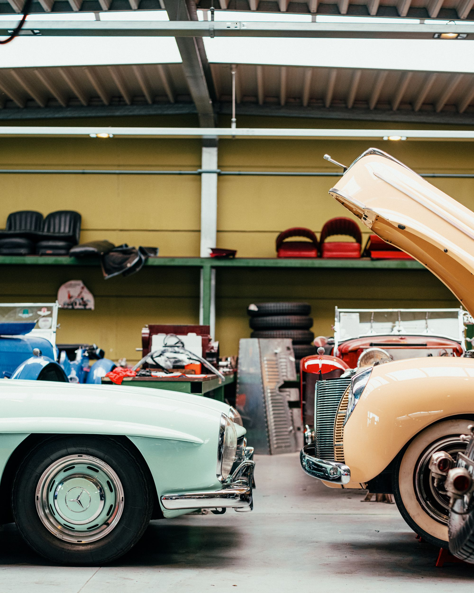
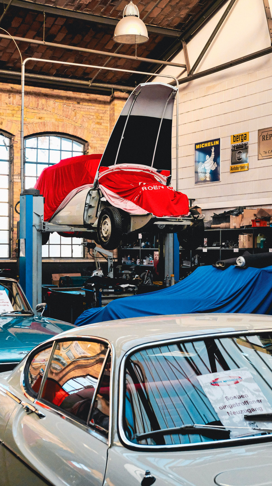
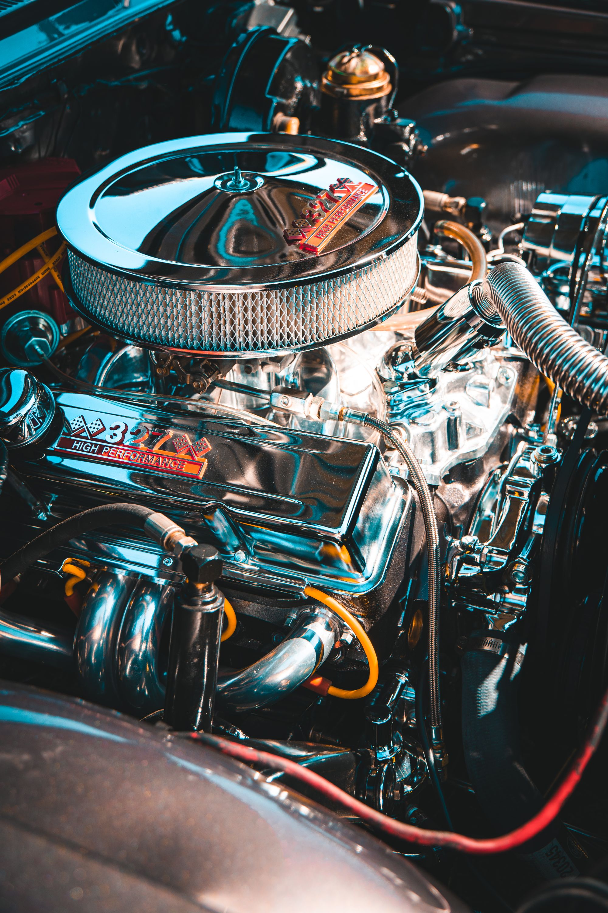
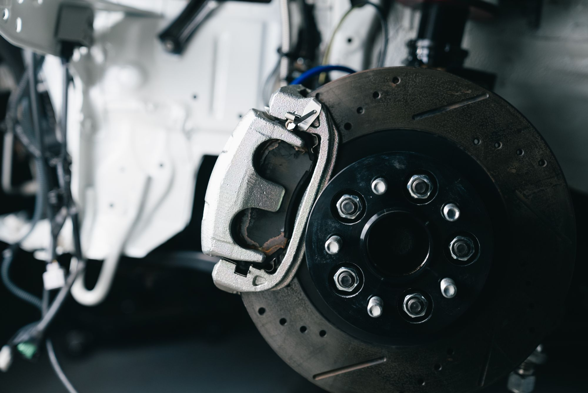
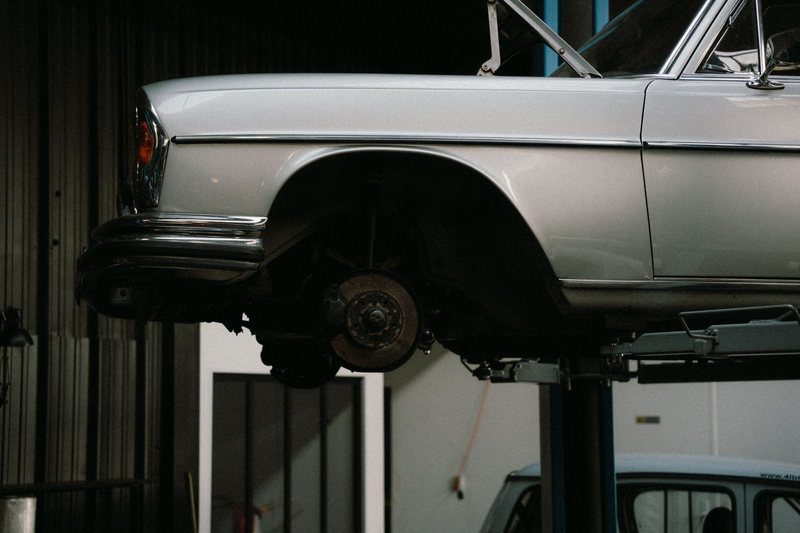
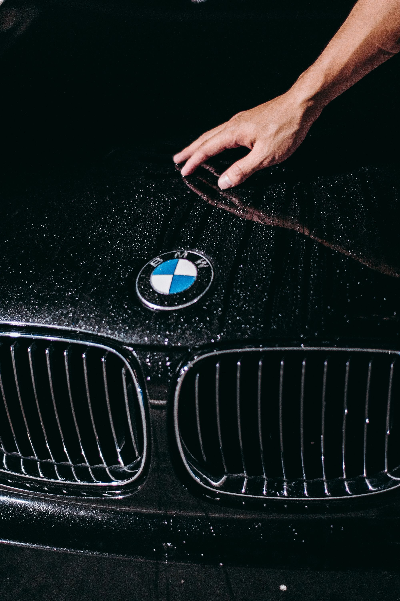

Seu carro nas mãos de quem entende de verdade. Desde 1980, uma oficina multimarca no Jabaquara — atendimento excepcional, preços justos e atualização constante nas técnicas e tecnologias do setor.

Quarenta e quatro anos numa mesma rua do Jabaquara não se explicam com propaganda: explicam-se com carro entregue no prazo, conta que fecha e cliente que volta.
A Riveiro Restauradora de Veículos abriu as portas em 1980 e nunca saiu do bairro. É uma oficina multimarca — recebe o carro popular do dia a dia com a mesma atenção que dá ao veículo que exige mão firme e tempo de bancada.
O que sustenta a casa é a soma de duas coisas que raramente andam juntas: atendimento excepcional e preços justos. Uma não vale sem a outra.
Tradição, aqui, não é sinônimo de parada no tempo. A oficina se mantém atualizada com as técnicas e tecnologias mais recentes do setor — o que muda é a ferramenta, não o critério.
Do óleo à revisão geral, o serviço sai com garantia e qualidade. É esse o acordo desde o primeiro dia.
Oficina multimarca. Todos os serviços saem com garantia e qualidade — e com o melhor preço da região. Para saber se atendemos o seu modelo, chame no WhatsApp: (11) 98138-2222.


Seu carro nas mãos de quem entende de verdade.Riveiro Restauradora de Veículos · Jabaquara, desde 1980
Uma régua de quatro décadas e meia: da abertura, em 1980, ao carro que entra na oficina hoje.
O mesmo bairro, o mesmo compromisso: atendimento excepcional, preços justos e serviço com garantia — sempre com as técnicas e tecnologias mais recentes do setor.
“A pelo menos 2 anos levo meu carro para o Ricardo!! Oficina de confiança, serviços de primeira qualidade e pontuais! Recomendo a todos.”
“Tive um excelente atendimento. Meu carro estava cheio de problemas crônicos e foi resolvido muito rápido a entrega do serviço.”
“Tive um excelente atendimento do telefone até a ida na oficina. Profissionais honestos e solícitos. Recomendo com certeza.”
Depoimentos reproduzidos do site oficial da Riveiro Restauradora de Veículos.

